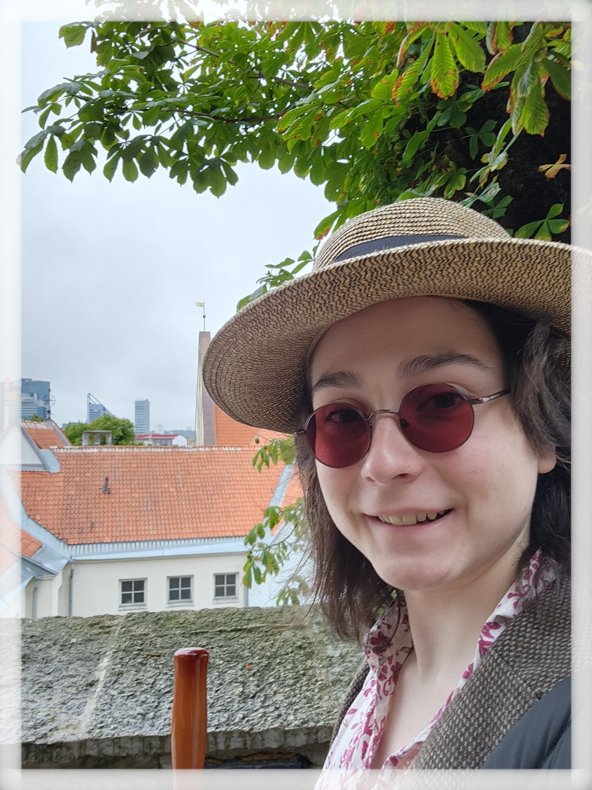

Jay Spencer's Resume
(208) 446-4036 ◇ JaySpencer.Business@gmail.com ◇ Spokane, WA 99203
Gonzaga University Undergrad ◇ Standard Tech, Next Gen Tech Bar, Gonzaga University
---------------------------------------------------------
Education
- Associate of Arts: General Education - Awarded 10/2023
Spokane Community College - Spokane WA
Skills
Volunteer for Spokane County Democrats
- Community outreach.
- Database Entry
- Assisting the smooth running of events
Student of Spokane Community College
- Understands syntax of several computer languages including Python, Kotlin, JavaScript, etc.
- Deep understanding of working with plugins and learning different software.
Student of Gonzaga University
- Self advocacy and time managment skills.
Next Gen Tech Bar, Gonzaga University
- Working within a team environment.
- Researching technology for the purpose of education.
- Customer service skills.
Work Experience
- Spokane County Democrats ◇ Volunteer ◇ 07-2022 to 02-2023
- Assisted with special events and programs.
- Participated in volunteer orientations and training sessions to learn about organizational changes and mission updates.
- Provided IT support by setting up and maintaining computers and other necessary technology.
- Used strong interpersonal communication skills to convey information to others.
- Supported engaging, fun, and smooth-running events by helping with organization and planning.
- Next Gen Tech Bar, Gonzaga University ◇ Standard Tech ◇ 09-2023 to Present
- Provided software and systems support to students of Gonzaga University.
- Worked closely with team and facilitated a positive working environment.
- Developed and preseneted technology demos relating to large data models such as deepfacelabs.
Hobbies
- Developing and incorporating plugins into games, writing, and other software.
- Writing technical documents for games and Personal Knowledge Management (PKM) Systems.
Navigation